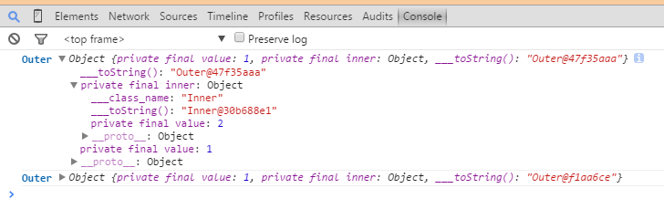

Server Code:
import javax.servlet.http.{HttpServlet, HttpServletRequest, HttpServletResponse}
import name.yumaa.ChromeLogger4J
import org.eclipse.jetty.server.Server
import org.eclipse.jetty.servlet.{ServletContextHandler, ServletHolder}
object Test {
def main(args: Array[String]): Unit = {
val server = new Server(8080)
val context = new ServletContextHandler(ServletContextHandler.SESSIONS)
context.setContextPath("/")
server.setHandler(context)
context.addServlet(new ServletHolder(new HelloLog4Chrome()), "/*")
server.start()
server.join()
}
}
class Inner(val value: Int)
class Outer(val value: Int, val inner: Inner)
class HelloLog4Chrome extends HttpServlet {
override def doGet(request: HttpServletRequest, response: HttpServletResponse) {
val console: ChromeLogger4J = new ChromeLogger4J(response)
console.stack = true
console.reflect = true
console.log(new Outer(1, new Inner(2)))
}
}